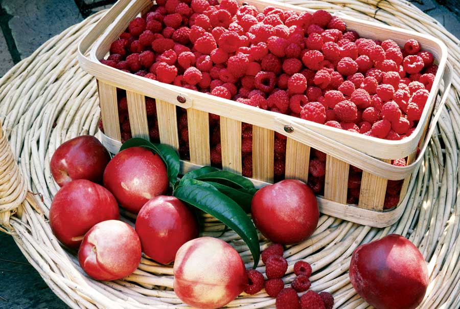

Early American colonists arrived to find raspberries growing abundantly. Two types were especially common: red raspberries and black raspberries, sometimes called blackcaps. Today’s cultivated varieties were developed from those two species crossed with hybrid varieties from Europe.
Nectarines are fuzzless peaches originating as a true breeding mutation of the peach, and they’ve been esteemed in Old World countries for more than 3,000 years.
There are still many commercial sources for historic fruits. The Fruit, Berry and Nut Inventory (Fourth Edition), recently published by the Seed Savers Exchange, compiles the offerings of 275 mail-order nurseries, with coded sources listed for each variety.
NECTARINE AND RASPBERRY STREUSEL
Ingredients:
Struesel:
1/4 lb butter
1/2 cup brown sugar
1 cup flour
1/4 tsp salt
3/4 tsp baking powder
3/4 cup rolled oats
1 tsp orange zest
Filling:
8 nectarines, sliced
1/4 cup sugar
1 1/2 tsp cornstarch
1 pint raspberries
Instructions:
For streusel: Cream zest, butter and sugar until fluffy. Add salt and baking powder, then oats and flour.
In a casserole dish, toss nectarines with sugar and cornstarch. Marinate for 10 minutes to draw out juices. Sprinkle raspberries over the nectarine slices. Crumble streusel dough over all. Bake at 375 degrees Fahrenheit for 30 minutes or until fruit bubbles clear and streusel is golden brown. Serve with whipped cream. Serves 6.
|
 ROSALIND CREASY Commercial sources for rosy raspberries, fuzz-free nectarines and many other historic fruits are listed in the Seed Savers Exchange’s “Fruit, Berry and Nut Inventory.” |
|
|